| テスト理論 |
| テスト理論 |
一般には項目パラメータの値は未知であるから、これについてもデータから値を求めておく必要がある。
 項目の識別力と困難度をまとめて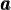、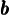と書く。 式 (101) は、とが既知であると見なしているから、これを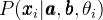と書いてもよい。 今、合計
項目の識別力と困難度をまとめて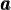、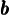と書く。 式 (101) は、とが既知であると見なしているから、これを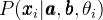と書いてもよい。 今、合計 人の回答者の回答パターン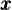が得られていると、これが得られる確率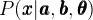は、
人の回答者の回答パターン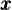が得られていると、これが得られる確率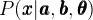は、
 |
(103) |
である。 ただし、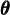 は個の を格納したベクトルである。
を格納したベクトルである。
能力パラメータの値を求めたときと同様、式 (103) をとの関数と見なしたものを尤度関数とし、対数尤度関数の導関数を0とおいてとついて解けばよいと思われる。 しかし、回答者数に合わせてサイズが大きくなるを残したままとを求めるのはよくないことが知られており、一般には式 (103) からを消去したものを尤度関数として扱う。 このためには、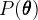をの確率分布として、
| 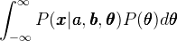 | 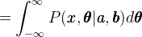 | (104) | ||
 |
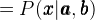 | (105) |
であることを利用すればよい。 としては、通常平均、分散共分散行列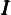の多変量標準正規分布が用いられる。 式(104) から式(105) の変形は、のあらゆる値の組み合わせに対し、そののもとでデータが得られる確率を評価し、その期待値を取っていると考えればよい。 また、式(104) の変形は、条件付き確率の性質
| 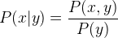 | (106) |
を利用している。
あとは、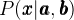の自然対数を取ったものをとについてそれぞれ偏微分し、0とおいたものを解けばよい。 このように、余計なパラメータを積分することで関数内から除去することを、パラメータの周辺化という。 周辺化した尤度関数を用いて最尤法を適用することから、これを周辺最尤法などという。 ただし、これにはコンピュータを用いた数値解法が必要である。
| テスト理論 |